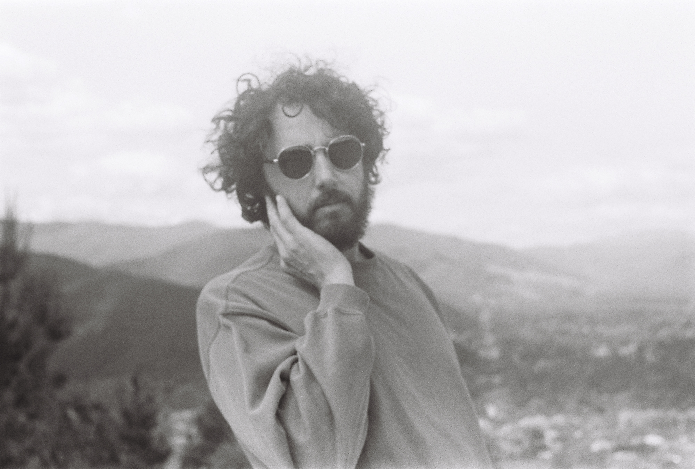
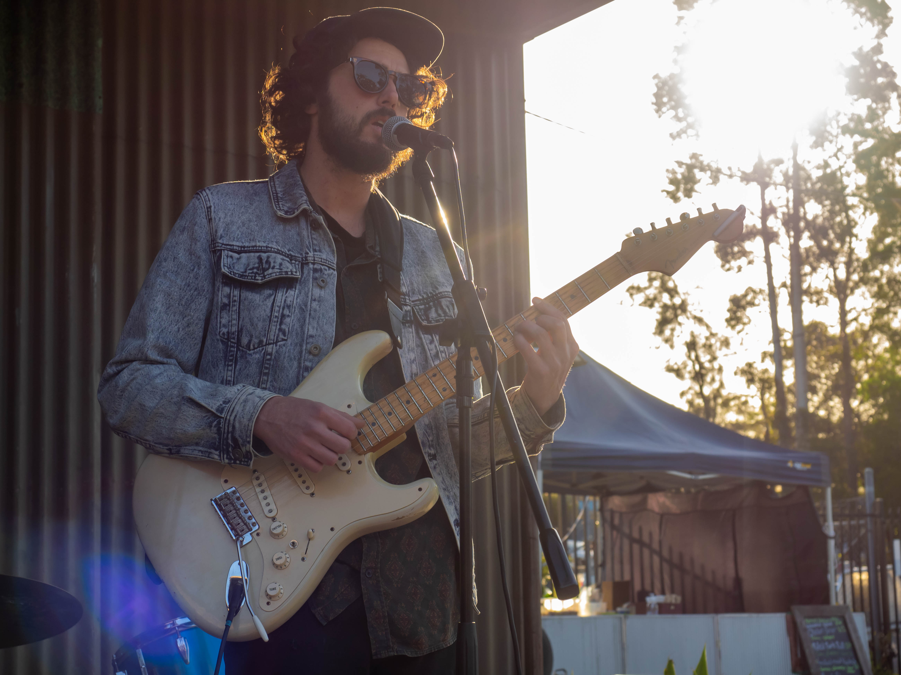

If you are viewing this page, you've likely been referred here by a QR code on a crumpled piece of A4 paper, presented to you by a tired-looking musician.
Don't be off-put by his aloof manner, he's a pussycat.

Will Chittick is a solo singer-songwriter from Port Kembla, Australia, previously known for fronting surf-psyche band the Chitticks.
In 2014 he began developing solo material, honing his skills busking on the streets of the NSW South Coast.
With a deep affection for artists such as Billy Bragg, the Dirty Three, Stella Donnelly and Cat Power, his songs combine personal narratives with haunting loop-layered melodies that push the timbral boundaries of his humble acoustic guitar.
His song Hollow Day (released by Le Boogie Records), has been played over 9000+ times on Soundcloud and he has supported the likes of Steve Smyth, Jepp and Depp and Ben Wright Smith as well as regularly performing at the Port Kembla Street Festival.

If you've read this far you are a thought-leader with incredible taste.
Perhaps the music you heard today resonated with you, and you want to experience that again. Visit the music page to find a disappointing lack of shit.